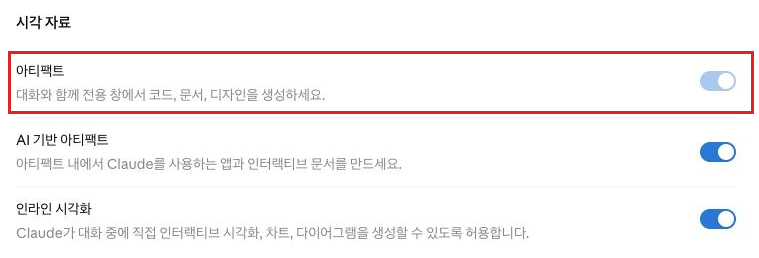
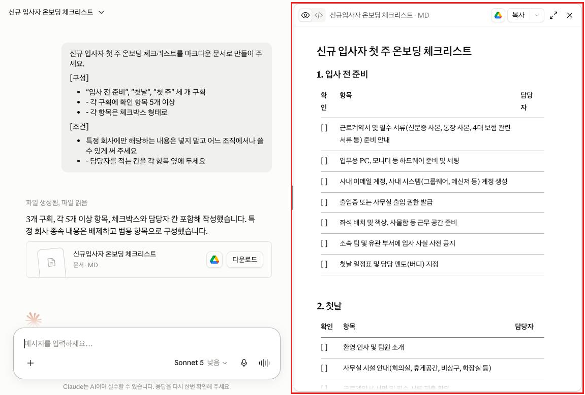
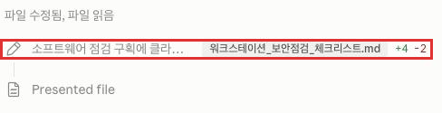
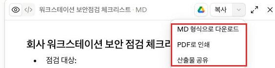

Claude · 초급 · 모듈 05
대화 옆에 열리는 전용 창(아티팩트)에서 문서를 만들고, 수정 요청과 변경 요약 확인으로 다듬은 뒤, 파일로 내려받아 대화 밖에서 사용합니다.
이 모듈을 마치면 다음을 할 수 있습니다.
| 항목 | 내용 |
|---|---|
| 필요 플랜 | 전 플랜 지원. 다만 아래 3-3의 활성화가 선행되어야 합니다. |
| 설치 | 불필요. 웹 브라우저만 있으면 됩니다. |
| 권한 | Team·Enterprise 사용자는 본인이 켤 수 없습니다. 소유자 권한이 있는 관리자에게 요청해야 합니다(3-3 참조). |
| 사전 지식 | 모듈 04 수료. |
| 예상 사용량 | 프롬프트 4회. 아티팩트 생성과 수정은 일반 대화보다 응답이 길어 사용량을 조금 더 씁니다. |
| 이 문서에서 부르는 이름 | 확인 상태 |
|---|---|
| "설정" > "기능" | 확인됨 (출처: support.claude.com/ko/articles/9487310, 2026-08-20 확인) |
| "설정" > "기능" > "시각 자료" > "아티팩트" | 명칭 변경 확인 (화면 직접 확인, 2026-08-27) |
| "조직 설정" > "기능" (Team·Enterprise) | 확인됨 (출처: support.claude.com/ko/articles/9487310, 2026-08-20 확인) |
| "Claude로 편집" | 확인됨 (출처: support.claude.com/ko/articles/9487310, 2026-08-20 확인) |
| "Claude로 수정 시도" | 확인됨 (출처: support.claude.com/ko/articles/9487310, 2026-08-20 확인) |
| "게시" 버튼 | 확인됨 (출처: support.claude.com/ko/articles/9487310, 2026-08-20 확인) |
| 채팅 컨트롤(슬라이더 아이콘, 다중 아티팩트 전환) | 확인됨 (출처: support.claude.com/ko/articles/9487310, 2026-08-20 확인) |
| 내보내기(다운로드·인쇄·공유) 위치와 버전 되돌리기 방식 | 확인됨 (화면 직접 확인, 2026-08-26) |
support.claude.com의 아티팩트 안내 문서(articles/9487310)는 "버전 선택기"로 이전 버전과 현재 버전을 오갈 수 있다고 설명하지만, 2026-08-26 기준 실제 화면에는 그런 전용 버전 선택기가 없습니다. 대신 수정할 때마다 채팅에 무엇이 몇 줄 추가·삭제됐는지 보여주는 "파일 수정됨" 변경 요약(diff) 카드가 나타나며, 이전 버전을 직접 불러오는 버튼은 없습니다. 또한 같은 문서가 안내하는 내보내기(다운로드·인쇄·공유) 위치도 실제로는 창 오른쪽 아래가 아니라 패널 상단의 "복사" 버튼 옆 "⌄" 드롭다운입니다. 추가로 같은 문서는 활성화 스위치 이름을 "코드 실행 및 파일 생성"이라고 안내하지만, 2026-08-27 기준 실제 화면의 토글 이름은 "아티팩트"이며 "설정 > 기능 > 시각 자료" 섹션에 있습니다. 이 문서는 아래부터 실제 화면을 기준으로 서술합니다.
초급 트랙은 원칙적으로 설정을 바꾸지 않습니다. 다만 "아티팩트" 토글이 꺼져 있으면 아티팩트가 아예 동작하지 않습니다. 이 설정을 켜지 않으면 학습자는 대화 중 오른쪽에 열리는 창이 무엇인지 영영 알 수 없으므로, 초급 트랙 전체에서 유일하게 이 설정 하나만 켭니다. 켠 뒤에는 추가 설정 없이 자동으로 동작합니다. (출처: support.claude.com/ko/articles/9487310, 2026-08-20 확인 · 토글 명칭은 화면 직접 확인, 2026-08-27)
Team·Enterprise 플랜에서는 소유자만 조직 설정에서 이 기능을 켤 수 있습니다. 조직이 이미 켜둔 경우 본인 계정의 "설정 > 기능 > 시각 자료"에도 "아티팩트" 토글이 나타나지만 회색으로 잠겨 있어 직접 켜거나 끌 수 없습니다(화면 직접 확인, 2026-08-27). 아직 켜지지 않았다면 아래 문구를 참고해 관리자에게 요청한 뒤, 활성화가 확인되면 실습을 시작하세요.
안녕하세요. 사내 Claude 교육 과정 실습을 위해 조직 설정에서
"아티팩트"(Help Center 문서상 명칭 "코드 실행 및 파일 생성") 기능을
활성화해 주실 수 있을까요?
- 위치: 조직 설정 > 기능 > 시각 자료 > "아티팩트"
- 필요한 이유: 아티팩트(대화 옆 전용 창에서 문서·표를 만드는 기능)가
이 설정 없이는 동작하지 않습니다.
- 대상: 교육 참여 인원
검토 부탁드립니다.관리자 측 설정 절차와 조직 단위 정책 판단은 상급 트랙에서 다룹니다.
아티팩트는 대화 옆에 따로 열리는 결과물 창입니다. 답변이 채팅 흐름에 묻히지 않고 독립된 창에 남기 때문에, 수정하고 버전을 되돌리고 파일로 내려받아 대화 밖에서 쓸 수 있습니다.
공식 문서는 다음 조건을 충족할 때 아티팩트가 생성된다고 설명합니다. (출처: support.claude.com/ko/articles/9487310, 2026-08-20 확인)
대표적인 예로는 문서(마크다운·일반 텍스트), 코드 스니펫, 단일 페이지 HTML 웹사이트, SVG 이미지, 다이어그램과 순서도, 대화형 React 컴포넌트가 있습니다.
| 기능 | 설명 |
|---|---|
| 수정 요청 | Claude에게 고쳐 달라고 하면 변경 사항이 아티팩트 창에 바로 반영됩니다. |
| 제자리 편집 | 마크다운 문서는 고칠 텍스트를 드래그해 "Claude로 편집"을 클릭하고 요청을 입력하면, 그 위치에서 바로 편집됩니다. |
| 변경 확인 | 전용 버전 선택기는 없습니다. 수정할 때마다 채팅에 "파일 수정됨" 변경 요약(diff) 카드가 나타나 몇 줄이 추가·삭제됐는지 보여줍니다. 이전 버전으로 직접 되돌리는 버튼은 없으므로, 되돌리려면 그렇게 다시 수정해 달라고 요청해야 합니다. |
| 내보내기 | 패널 상단 "복사" 버튼 옆의 "⌄" 드롭다운에서 다운로드·인쇄·공유를 할 수 있습니다. 코드 보기 전환은 그 왼쪽의 눈 모양 아이콘으로 합니다. |
| 오류 수정 | 오류가 나면 "Claude로 수정 시도" 버튼이 나타납니다. 다만 수정 성공이 보장되지는 않습니다. |
| 여러 아티팩트 | 한 대화에서 여러 개를 열 수 있고, 오른쪽 위 슬라이더 아이콘(채팅 컨트롤)으로 전환합니다. |
대화에서 만든 아티팩트는 사이드바의 아티팩트 섹션에 자동으로 나타나지 않습니다. 아티팩트를 열고 "게시"를 클릭해야 그 섹션에 추가됩니다. (출처: support.claude.com/ko/articles/9487310, 2026-08-20 확인)
이 모듈에서는 "게시"를 누르지 않고 다운로드만 합니다. 게시와 공유 범위 설정은 조직 단위 판단이 필요해 상급 트랙에서 다룹니다.
아티팩트에는 초급 범위를 넘는 기능이 여럿 있습니다. 아래는 모두 이 모듈에서 다루지 않으며, 상위 트랙에서 별도로 다룹니다.
만들 결과물: 내려받은 아티팩트 파일 1개(업무용 체크리스트 문서).
왼쪽 아래 모서리에서 이니셜 또는 이름을 클릭하고 "설정" > "기능"으로 이동합니다. Team·Enterprise 사용자는 다음 단계의 토글이 회색으로 잠겨 있어 직접 켤 수 없으니 3-3의 안내를 따르세요.
"기능" 화면에서 아래로 스크롤해 "시각 자료" 섹션의 "아티팩트" 토글을 찾아 켭니다. 이것이 이 코스에서 바꾸는 유일한 설정입니다. Help Center 문서는 이 기능을 "코드 실행 및 파일 생성"으로 안내하지만, 2026-08-27 기준 실제 화면의 토글 이름은 "아티팩트"입니다.

기능 화면의 시각 자료 섹션. "아티팩트" 토글에 빨간 테두리로 강조 표시, 조직 계정이라 옅은 색으로 잠긴 채 켜져 있고 아래로 AI 기반 아티팩트·인라인 시각화 토글이 이어짐">새 대화를 열고 아래 프롬프트를 붙여 넣은 뒤 "제출" 버튼을 클릭합니다. 15줄이 넘는 독립적인 문서를 요청하므로 아티팩트가 생성됩니다.
신규 입사자 첫 주 온보딩 체크리스트를 마크다운 문서로 만들어 주세요.
[구성]
- "입사 전 준비", "첫날", "첫 주" 세 개 구획
- 각 구획에 확인 항목 5개 이상
- 각 항목은 체크박스 형태로
[조건]
- 특정 회사에만 해당하는 내용은 넣지 말고 어느 조직에서나 쓸 수 있게 써 주세요
- 담당자를 적는 칸을 각 항목 옆에 두세요응답이 채팅에 길게 나오는 대신, 화면 오른쪽에 전용 창이 열리고 그 안에 체크리스트가 표시됩니다. 이것이 아티팩트입니다.

같은 대화에서 아래 프롬프트를 보냅니다. 변경 사항이 아티팩트 창에 바로 반영되고, 이전 내용은 별도 버전으로 남습니다.
"첫 주" 구획에 원격 근무자를 위한 항목 3개를 추가해 주세요.
나머지 구획은 그대로 두면 됩니다.채팅 쪽을 보면 응답 위에 "파일 수정됨, 파일 읽음"이라는 접이식 표시가 있습니다. 이를 클릭해 펼치면 방금 수정으로 몇 줄이 추가·삭제됐는지(+4 -2 형태) 보여주는 변경 요약 카드가 나타납니다. 이것으로 방금 추가된 3개 항목이 실제로 반영됐는지 확인합니다. 전용 버전 선택기는 없으므로, 이전 내용으로 되돌리고 싶다면 "방금 추가한 항목을 다시 빼 주세요"처럼 되돌리는 수정을 다시 요청해야 합니다.

아티팩트 안에서 고치고 싶은 문장을 드래그해 선택하면 "Claude로 편집"이 나타납니다. 이를 클릭하고 "이 항목을 더 짧게 줄여 주세요" 같은 요청을 입력합니다. 채팅에서 "몇 번째 항목"인지 설명할 필요 없이, 표시한 위치가 바로 편집됩니다.
아티팩트 창 상단의 "복사" 버튼 옆 "⌄" 드롭다운을 클릭하고 "MD 형식으로 다운로드"를 선택해 파일로 저장합니다. 이 파일이 이 모듈의 결과물입니다. 같은 드롭다운에서 "PDF로 인쇄"와 "산출물 공유"도 할 수 있고, 클립보드 복사는 그 옆의 "복사" 버튼, 코드 보기 전환은 맨 왼쪽의 눈 모양 아이콘으로 합니다.

다운로드 폴더에서 파일을 찾아 열어 봅니다. 화면에서 본 내용이 그대로 들어 있으면 성공입니다. 이제 이 파일을 사내 위키에 붙여넣거나 동료에게 전달할 수 있습니다.
아래 "예상 출력"은 응답 예시입니다. 성공 여부는 문구가 아니라 아티팩트 창이 열렸는지, 항목 구성이 요청대로인지, 파일이 실제로 저장됐는지로 판단합니다.
사전 준비물: "아티팩트"가 켜진 계정, 새 대화 1개.
신규 입사자 첫 주 온보딩 체크리스트를 마크다운 문서로 만들어 주세요.
[구성]
- "입사 전 준비", "첫날", "첫 주" 세 개 구획
- 각 구획에 확인 항목 5개 이상
- 각 항목은 체크박스 형태로
[조건]
- 특정 회사에만 해당하는 내용은 넣지 말고 어느 조직에서나 쓸 수 있게 써 주세요
- 담당자를 적는 칸을 각 항목 옆에 두세요예상 출력(응답 예시): 채팅에는 짧은 안내만 나오고, 화면 오른쪽 전용 창에 세 구획으로 나뉜 체크리스트 문서가 표시됩니다.
성공 확인 방법: 아래 3가지가 모두 맞으면 성공입니다.
채팅 안에 그냥 텍스트로만 나왔다면 설정이 아직 반영되지 않았을 수 있습니다. 페이지를 새로고침한 뒤 새 대화에서 다시 시도하세요.
사전 준비물: 프롬프트 A로 아티팩트가 생성된 같은 대화.
"첫 주" 구획에 원격 근무자를 위한 항목 3개를 추가해 주세요.
나머지 구획은 그대로 두면 됩니다.예상 출력(응답 예시): 아티팩트 창의 "첫 주" 구획에 원격 근무 관련 항목이 늘어나고, 나머지 구획은 그대로 유지됩니다.
성공 확인 방법: 아티팩트 창의 내용이 바뀌었고, 응답 위 "파일 수정됨" 표시를 펼쳤을 때 변경 요약(diff) 카드로 무엇이 추가·삭제됐는지 확인할 수 있으면 성공입니다. 새 아티팩트가 따로 만들어진 것이 아니라 같은 아티팩트의 새 버전이어야 합니다.
사전 준비물: 아티팩트 안에서 고칠 문장을 드래그로 선택하고 "Claude로 편집"을 클릭한 상태.
이 항목을 한 줄로 더 짧게 줄여 주세요.예상 출력(응답 예시): 선택한 부분만 짧아지고 나머지는 그대로 남습니다.
성공 확인 방법: 지정한 위치만 바뀌었다면 성공입니다. 문서 전체가 다시 쓰였다면 드래그 선택이 제대로 되지 않은 것이니 다시 시도하세요.
| 증상 | 원인 | 해결 |
|---|---|---|
| "아티팩트" 토글이 회색으로 잠겨 있어 켤 수 없다 | Team·Enterprise 플랜이라 조직 소유자만 켤 수 있음 | 본인 계정에도 항목은 보이지만 개인이 켤 수 없습니다. 3-3의 요청 문구를 관리자에게 보내세요. |
| 설정을 켰는데도 아티팩트가 안 열린다 | 화면에 설정이 아직 반영되지 않음 | 페이지를 새로고침하고 새 대화에서 다시 시도합니다. |
| 짧은 답변은 아티팩트로 안 만들어진다 | 15줄 미만이라 생성 기준에 미달 | 정상 동작입니다. 더 긴 문서를 요청하거나 "아티팩트로 만들어 주세요"라고 명시하세요. |
| 아티팩트가 오류를 표시한다 | 생성된 코드에 문제가 있음 | 오류 메시지 근처의 "Claude로 수정 시도"를 클릭합니다. 다만 수정 성공이 보장되지는 않으므로, 반복해도 안 되면 요청을 더 단순하게 다시 써 보세요. |
| 사이드바 아티팩트 섹션에 안 보인다 | "게시"를 누르지 않음 | 정상 동작입니다. 대화에서 만든 아티팩트는 자동 저장되지 않습니다. 이 모듈은 다운로드까지만 하므로 그대로 두면 됩니다. |
이 모듈로 Claude 초급 코스가 끝납니다. 아래를 확인한 뒤 중급 트랙으로 넘어가세요.
이 모듈에는 캡처 4장이 필요합니다.
| 번호 | 화면 | 진입 경로 | 캡처 범위 | 강조 표시 | 캡션 |
|---|---|---|---|---|---|
| C-01 | "설정" > "기능" > "시각 자료" | 왼쪽 아래 이니셜/이름 → "설정" → "기능" → 스크롤 | "시각 자료" 섹션 전체 | "아티팩트" 토글 | 아티팩트를 쓰려면 이 설정을 켜야 한다. 초급의 유일한 설정 변경이다. |
| C-02 | 아티팩트가 열린 상태 | 프롬프트 A 전송 후 | 채팅+아티팩트 창(좌측 대화 목록 사이드바 제외) | 아티팩트 창 영역 | 아티팩트는 대화 오른쪽 전용 창에 열린다. |
| C-03 | 채팅에 펼쳐진 "파일 수정됨" 변경 요약(diff) 카드 | 프롬프트 B로 수정한 뒤 "파일 수정됨" 표시 클릭 | 변경 요약 카드와 그 위아래 텍스트 | 파일명과 변경 줄 수(+4 -2) | 수정할 때마다 채팅에 변경 요약 카드가 나타난다. 별도의 버전 선택기는 없다. |
| C-04 | 내보내기 드롭다운(펼친 상태) | 아티팩트 창 상단 "복사" 버튼 옆 "⌄" 클릭 | 펼쳐진 드롭다운 메뉴 전체 | 드롭다운 메뉴 영역 | 다운로드·인쇄·공유는 창 상단 "⌄" 드롭다운에 있다. |
C-01~C-04 네 장 모두 촬영을 마쳤습니다(2026-08-27 기준). 당초 C-01은 Free·Pro·Max 계정으로 촬영할 계획이었으나, 실제로는 Team·Enterprise 조직 계정(Ho Tech)에도 "설정 > 기능 > 시각 자료"에 "아티팩트" 토글이 나타나는 것을 확인해(조직이 이미 켜둔 상태라 회색으로 잠김) 그 화면으로 대체했습니다. 이 상태는 3-3에서 설명하는 Team·Enterprise 제약을 그대로 보여주므로 학습 목적에 더 부합합니다. 관리자 전용 조직 설정 화면은 상급 트랙 모듈에서 별도로 다룹니다.
https://support.claude.com/ko/articles/9487310-아티팩트란-무엇이며-어떻게-사용하나요 2026-08-20 확인아티팩트의 생성 기준·활성화 경로·플랜별 권한은 한국어 지원 센터의 전용 문서로 확인했습니다. 창 안의 기능(변경 확인 방식, 내보내기 위치)은 같은 문서와 실제 화면이 달라 2026-08-26에 claude.ai에서 직접 아티팩트를 만들고 수정해 재확인했으며, 이 문서는 그 결과를 기준으로 서술합니다. 활성화 토글의 명칭과 위치("설정 > 기능 > 시각 자료 > 아티팩트")도 지원 센터 문서와 달라 2026-08-27에 재확인했습니다. 초급 범위를 넘는 기능(AI 기반 아티팩트, MCP, 지속적 저장소, 게시)은 지원 센터 문서에서 확인했으나 4-5에 제외 사유만 적고 실습에서는 다루지 않았습니다.